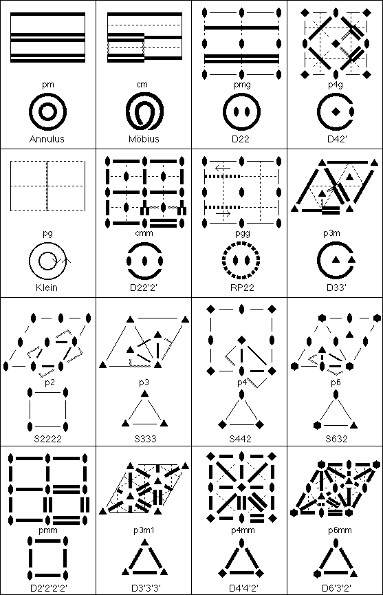

Orbifold Atlas
Derivation of the Plane Group Euclidean 2-Orbifolds.
(p1, a torus, is not shown.)
For further information, click
here
.

Orbifold Atlas Home Page
Crystallographic Topology Home Page
Page last revised: September 12, 1996
 Orbifold Atlas
Orbifold Atlas

 Orbifold Atlas Home Page
Orbifold Atlas Home Page
 Crystallographic Topology Home Page
Crystallographic Topology Home Page